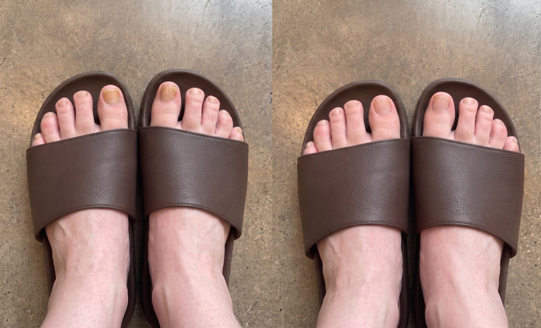

Il mio medico ha detto che ci sarebbe voluto fino a un anno per curare la mia micosi ostinata. L'ho risolta in 4 settimane con QUESTO
Ho provato 9 diversi "rimedi" in 5 anni e il fungo tornava SEMPRE. Ora sono libera dalla micosi da oltre 18 mesi – e la soluzione era incredibilmente semplice! Ti mostrerò esattamente cosa ho fatto.

Sono Chiara, ho 37 anni e per 5 anni ho avuto una micosi alle unghie dei piedi imbarazzante che non riuscivo a sconfiggere.
Credo di averla presa durante una pedicure in un centro estetico. L'ho ignorata per un paio d'anni pensando che sarebbe passata da sola …
Ma non è stato così.
Anzi, si è diffusa all'unghia successiva, poi a quella dopo, finché non ho potuto più far finta di niente. Ero inorridita.
Era terribile guardarmi i piedi – mi faceva sentire sporca.
Tutta la mia vita ha iniziato a girare intorno al nascondere i miei brutti piedi. In spiaggia li seppellivo nella sabbia perché nessuno li vedesse. A casa indossavo i calzini tutto l'anno …
Evitavo le pedicure con le amiche inventando scuse. Sceglievo ogni outfit in base alle scarpe che coprivano le dita – mai i graziosi sandali aperti che avrei voluto indossare.
Sistemare le mie unghie è diventata un'ossessione, così ho passato i successivi 5 anni a provare di TUTTO.
E se hai mai cercato su Google "come curare la micosi delle unghie", sai di cosa parlo …
Esistono centinaia di "soluzioni". Rimedi casalinghi. Pillole. Routine mattutine in 20 passaggi da seguire prima ancora di mettersi le scarpe.
È un lavoro a tempo pieno solo cercare di starci dietro!
E il punto della micosi delle unghie è che rimani intrappolata in questo ciclo terribile. Senti parlare di una "nuova soluzione eccitante". La provi. Funziona per qualche settimana. Poi il fungo torna.
Ogni. Singola. Volta.
È deprimente. Dopo un po', inizi a credere che questa cosa vivrà con te per sempre.
Ma la buona notizia è che … non deve essere per forza così.
C'è UNA cosa che finalmente ha funzionato per me –ha pulito le mie unghie in poche settimane, non anni, e l'ho fatto in pochi secondi ogni mattina da casa.
Quindi ti mostrerò ogni singola cosa che ho provato, cosa è fallito e perché, così potrai saltare i 5 anni di consigli fuorvianti e andare dritta all'unica cosa che può davvero risolvere la tua micosi velocemente – e per sempre.

I rimedi temporanei che faranno tornare la micosi (non sprecare tempo con questi)
Sono andata dal mio medico di base e mi ha detto che ci sarebbe voluto circa un anno per guarire la micosi.
La prima cosa che mi ha prescritto è stata la Terbinafina –e ha effettivamente funzionato. Il fungo è visibilmente sparito, le mie unghie hanno iniziato a sembrare quasi normali e mi sono emozionata pensando che fosse la fine.
Oh cielo, quanto mi sbagliavo!
Meno di 2 settimane dopo aver finito le pillole, le strisce gialle sono tornate a strisciare sul mio alluce. Mi sono seduta sul bordo della vasca e ho pianto.
È allora che ho iniziato a provare tutto il resto …
Olio di tea tree –Ogni discussione su Reddit, ogni forum per mamme, ogni risultato di Google lo consigliava. L'ho diluito con olio di cocco come dicevano i forum, l'ho applicato due volte al giorno con un cotton fioc, sono stata costante per 4 mesi. Le mie unghie sembravano un po' meglio. Poi sono andata via per un weekend lungo, l'ho saltato per 3 giorni e quando sono tornata a casa il fungo era tornato con prepotenza.
Vicks VapoRub. Ha ammorbidito le unghie e pensavo davvero che stesse funzionando. Poi una mattina ho guardato giù e ho notato che il fungo si era diffuso a un terzo dito.
Pediluvi con aceto di mele. 20 minuti a sera, ogni sera, per 6 settimane. Il mio bagno puzzava come una friggitoria. Le unghie sembravano leggermente migliori all'inizio, poi la situazione si è bloccata, poi è peggiorata.
Creme antimicotiche da farmacia –Canesten, Daktarin, Lamisil crema –le usavo religiosamente ogni sera. L'etichetta diceva "risultati in 4 settimane". Per me, i risultati sono stati: assolutamente nulla.
Pediluvi con Listerine –Un altro "miracolo" di internet. 2 mesi così. Tutto quello che ho ottenuto sono stati i piedi blu e un bagno che puzzava come uno studio dentistico.
Pasta di bicarbonato di sodio. Dopo tre settimane avevo la pelle irritata, nessun miglioramento e mi svegliavo con il bicarbonato nelle lenzuola.
Trattamento laser in una clinica privata in città. 280 € a sessione. Ho speso oltre 1.100 €. Il fungo è sparito circa del 60% dopo l'intero ciclo. Sei mesi dopo, ero tornata al punto di partenza.
Smalto medicato su prescrizione da applicare ogni giorno per un massimo di 48 settimane. Ho resistito 8 mesi. Il fungo si è ritirato per circa 6 settimane a metà percorso. Poi è tornato.
Ogni volta che qualcosa falliva, mi sentivo dire la stessa cosa –"dagli più tempo, sii più costante, devi continuare."
Ma non potevo immaginare di passare il resto della mia vita a prendere una pillola che mi faceva stare male o a strofinare cose sulle unghie ogni singolo giorno.
Doveva esserci qualcosa di meglio. Qualcosa che funzionasse davvero, velocemente, e che impedisse al fungo di tornare.
E l'ho trovato.
Durante la mia ricerca per una soluzione vera, mi è stata consigliata un'esperta olistica della pelle a Milano – la Dott.ssa Cristina Ferri – che aveva avuto un enorme successo nel trattare casi ostinati di micosi cutanea e ungueale.
Due settimane dopo, ero nel suo studio.
Ha iniziato spiegando qualcosa che non avevo mai sentito prima: il fungo è così difficile da uccidere perché non vive sull'unghia –vive tra l'unghia e il letto ungueale.
Ciò significa che ogni trattamento topico che avevo provato – l'olio di tea tree, il Vicks, il Lamisil, l'aceto di mele – doveva penetrare attraverso la spessa cheratina – il duro strato proteico di cui è fatta l'unghia – per raggiungere il fungo.
E i farmaci orali devono viaggiare attraverso il flusso sanguigno fino ai minuscoli vasi alla base dell'unghia prima ancora di poter iniziare a ucciderlo.
Entrambe le cose sono incredibilmente difficili da ottenere. Questo è esattamente il motivo per cui questi trattamenti sembrano funzionare all'inizio – uccidono il fungo superficiale debole che puoi vedere. Ma i ceppi resistenti sepolti nel profondo del letto ungueale sopravvivono, si moltiplicano e tornano più forti di prima.
E anche quando uno di questi trattamenti funziona, è quasi impossibile farlo perfettamente. I protocolli standard richiedono mesi – a volte anni – di perfetta disciplina. Salta qualche giorno e torni al punto di partenza.
Per la prima volta in 5 anni, ogni singolo fallimento ha improvvisamente avuto senso.
"Quindi ciò di cui hai effettivamente bisogno," ha detto la Dott.ssa Ferri, "sono due cose che lavorano insieme."
- Primo – un sistema di erogazione che possa effettivamente penetrare la lamina ungueale. Questo significa a base d'olio, non d'acqua. L'olio è una delle poche sostanze che attraversa la barriera di cheratina e raggiunge il letto ungueale sottostante.
- E secondo – i giusti composti antimicotici all'interno di quell'olio. L'esatta combinazione di ingredienti botanici che lavorano insieme per:
- Penetrare attraverso anche le unghie più spesse
- Combattere il fungo alla radice (non solo in superficie)
- Aiutare a ripristinare il sistema di difesa naturale dell'unghia
- Aiutare a prevenire la reinfezione in modo permanente
Ha aperto un cassetto della scrivania e mi ha consegnato la soluzione che avrebbe risolto 5 anni di lotta in sole 4 settimane.

Ti presentiamo Orivelle: la penna per unghie a base vegetale che elimina definitivamente la micosi
Orivelle contiene 14 potenti ingredienti botanici – ognuno selezionato per un ruolo specifico nell'uccidere il fungo, ripristinare le unghie danneggiate e proteggere la pelle circostante.

Inoltre, Vitamina C, Menta Piperita, Olio di Colza, Olio di Semi d'Uva, Olio di Mandorle Dolci, Burro di Karité, Olio di Nocciola Cilena, Olio di Jojoba, Olio di Enotera e Olio di Rosa Mosqueta –tutti questi potenti composti lavorano insieme per ricostruire unghie fragili, gialle e fessurate in unghie sane e bellissime.
Orivelle non sta solo uccidendo il fungo. Sta ripristinando tutto ciò che il fungo ha distrutto.
Cosa rende Orivelle diverso:
Creme: Restano in superficie, non possono penetrare l'unghia
Pillole: Attaccano il fegato, funzionano solo nel 17% dei casi
Rimedi casalinghi: Troppo deboli, risultati incostanti
Orivelle: Penetra l'intera unghia, combatte il fungo alla radice e ne previene il ritorno
"Posso indossare di nuovo i sandali!" – Storie vere da persone vere
Margherita K.
 Acquisto verificato
Acquisto verificato
“Ho 67 anni e ho avuto la micosi alle unghie per 12 anni. DODICI ANNI! Ho provato di tutto, comprese quelle orribili pillole che mi facevano stare male. Mia figlia ha trovato Orivelle online e me l'ha comprato. In 2 settimane, le mie unghie hanno quasi smesso di sbriciolarsi. Alla settimana 4, potevo vedere l'unghia rosa e sana crescere dalla base. Ora, a 3 mesi, le mie unghie sono quasi pulite per la prima volta dopo anni! Ho appena prenotato una pedicure – cosa che non facevo da oltre un decennio. Grazie!”

PRIMA – DOPO (8 SETTIMANE) · *I risultati individuali possono variare. Margherita K., cliente verificata
Linda M.
Acquisto verificato
"8 anni di micosi spariti dopo 6 settimane di trattamento"
Sono COSÌ felice!! Alla sesta settimana le mie unghie sembravano pulite e normali di nuovo. Sono uscita e ho comprato 3 nuovi paia di sandali lo scorso weekend.

Marco D.
Acquisto verificato
"Successo con Orivelle in soli 2 mesi!!!"
Le unghie crescono rosa e normali alla base, niente più giallo, niente più spessore. Continuo a controllare perché non posso credere che sia finalmente sparito. Non potrei raccomandarlo abbastanza.

I migliori podologi lo raccomandano discretamente ai pazienti
“Sono un podologo da 18 anni. Quando i pazienti hanno iniziato a mostrarmi i loro risultati con Orivelle, ero scettico. Ma il miglioramento era innegabile. Ora lo raccomando ai pazienti che non possono assumere farmaci orali o che hanno infezioni ricorrenti. Il tasso di successo è notevole.” – Dott. Giovanni T., DPM, Milano
In uno studio indipendente su 500 utenti:
Il semplice rituale di 60 secondi che trasforma le tue unghie
Usare Orivelle è più facile che lavarsi i denti:
- Passaggio 1: Pulisci e asciuga le unghie
- Passaggio 2: Applica Orivelle con il pennellino di precisione (come uno smalto)
- Passaggio 3: Lascia asciugare per 60 secondi
Fallo due volte al giorno. La maggior parte delle persone vede i risultati in 7 –14 giorni.
Niente limature. Niente ammollo. Niente sporco.
Confronta i costi: Orivelle rispetto ai trattamenti tradizionali
Trattamento Laser: 500 €–1.500 € (spesso non coperto da assicurazione)
Pillole su prescrizione: 400 €+ per una scorta di 3 mesi (più test del fegato)
Visite podologiche: 150 €+ a visita (necessarie più visite)
Penna Orivelle: meno di 19,99 € (dura 30+ giorni)
Inoltre, Orivelle è dotato di una garanzia soddisfatti o rimborsati di 30 giorni. Se non vedi miglioramenti, ricevi un rimborso completo. Senza domande.
Giorgio P.
Acquisto verificato
“Sono diabetico e il mio medico ha detto che non potevo prendere le pillole antimicotiche. Ho combattuto questa micosi per 5 anni con creme che non hanno mai funzionato. Orivelle ha aiutato a pulire le mie unghie in 6 settimane! Mia moglie ha ordinato altre 3 penne per non rimanere mai senza.”
Solo per i visitatori del nostro sito, Orivelle sarà venduto in sconto! Premi il pulsante "GIRA" e vinci uno sconto! Buona fortuna!
 Controlla la disponibilità e applica lo sconto →
Controlla la disponibilità e applica lo sconto →
Fornitura scontata LIMITATA DISPONIBILE dal:
Prenota la tua OFFERTA ESCLUSIVA con uno sconto del 70%!
ATTENZIONE: Attenzione ai prodotti Orivelle falsi su Amazon
A causa della sua popolarità, online sono apparse versioni contraffatte di Orivelle. Questi falsi non contengono le corrette concentrazioni botaniche e non funzioneranno.
Acquista solo dal sito ufficiale per assicurarti di ottenere la formula autentica con la garanzia di 30 giorni.
A causa della diffusione virale sui social media, Orivelle si sta esaurendo velocemente.
Ultime scorte rimaste al prezzo scontato.
La prossima spedizione arriverà tra 3–4 settimane.
Creato esclusivamente per ogni età! Scegli la tua fascia d'età e trova la soluzione migliore per te!
Per età 60+
Clicca qui per uno sconto del70%!
Per età 40 –60
Clicca qui per uno sconto del70%!
Per età 20 –40
Clicca qui per uno sconto del70%!
L'offerta speciale sta per finire: risparmia fino al 70%

Save up to 70% today
Come parte della loro campagna di sensibilizzazione online, Orivelle offre ai nostri lettori italiani uno sconto esclusivo:
- 1 Penna →Risparmia 50%
- Pacchetto da 3 Penne →Risparmia 60%← MIGLIOR VALORE
- Pacchetto da 6 Penne →Risparmia 70% (meno di 10 € a penna!)
Tutti gli ordini includono:
- Spedizione GRATUITA (arriva in 2 –3 giorni)
- Garanzia soddisfatti o rimborsati di 30 giorni
- Guida alla cura delle unghie: "Unghie pulite in 30 giorni"
Lucia S.
Acquisto verificato
“Non pensarci due volte! Ho sprecato ANNI e CENTINAIA di euro in trattamenti che non funzionavano. Orivelle ha aiutato a pulire le mie unghie in 8 settimane. Ho 72 anni e indosso scarpe aperte per la prima volta dai miei 50 anni!”
Patrizia Rossi
2 ore fa
Appena ordinato! Mia sorella lo usa da un mese e le sue unghie sembrano fantastiche. Non vedo l'ora di provarlo!
Michele Conti
5 ore fa
È sicuro per gli anziani? Mia mamma ha 78 anni e combatte con questo problema da anni.
Risposta dello staff: Sì, Orivelle è sicuro per tutte le età. È completamente naturale, senza sostanze chimiche aggressive. Molti clienti tra i 70 e gli 80 anni lo usano con successo!
Susanna Bianchi
Ieri
AGGIORNAMENTO: Lo uso da 6 settimane ormai. La differenza è incredibile! Perché non l'ho trovato prima??? Appena ordinate altre 3 per mio marito.
Davide Romano
2 giorni fa
Lo sconto funziona ancora! Ho appena preso 3 flaconi per meno del prezzo della mia ultima prescrizione. Grazie per averlo condiviso!
Barbara Moretti
3 giorni fa
Quanto tempo ci mette la spedizione? Voglio iniziare il trattamento il prima possibile.
Risposta dello staff: Gli ordini vengono spediti lo stesso giorno e arrivano in 2-3 giorni lavorativi con spedizione espressa gratuita!
Giacomo Ricci
3 giorni fa
Sono un infermiere ed ero scettico, ma la scienza dietro ha senso. Dopo 4 settimane l'unghia del mio alluce è quasi completamente pulita. Ne ordinerò altri!